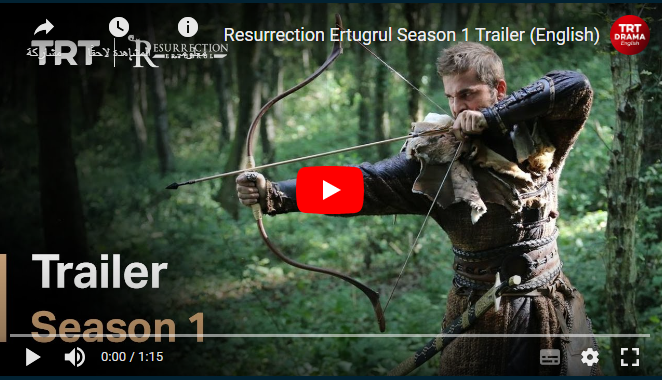
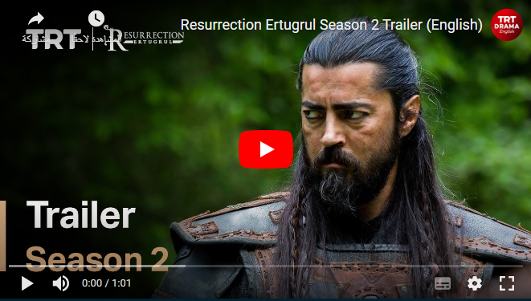

THE STORY OF THE KAYI TRIBE
Set in Anatolia (modern-day Turkey), the nomadic Kayi tribe of the Oghuz Turks are on a quest to find a place they can finally call home. Ertugrul, the leader of the tribe, leads his people through perseverance against hardship while striving for justice and maintaining the traditions of the land. By battling his enemies with strength and bravery, Ertugrul consequently plants the seed that would lead to the founding of the Ottoman Empire, which spread across three continents and ruled for six centuries.
Click here to download the ringtone
| Season | Trailer | Photo |
|---|---|---|
Season 1Ertugrul and his friends encounter the Knights Templar on a hunt. After rescuing three Seljuk prisoners, they return to the Kayi tribe. But the new arrivals cause problems for the tribe's leader Suleyman Shah. He dispatches Ertugrul on a mission to find new land and seek an agreement with the Sultan in Aleppo. |
Click on the photo to see the trailer. |  |
Season 2Ertugrul is captured by the Mongols. After escaping, his return to the tribe creates internal strife with his cousin Tugtekin. Meanwhile, Ertugrul's long-lost brother appears. The Kayi tribe splits as Ertugrul and a group journey to West Anatolia, leaving the rest of the tribe. |
Watch Now |  |